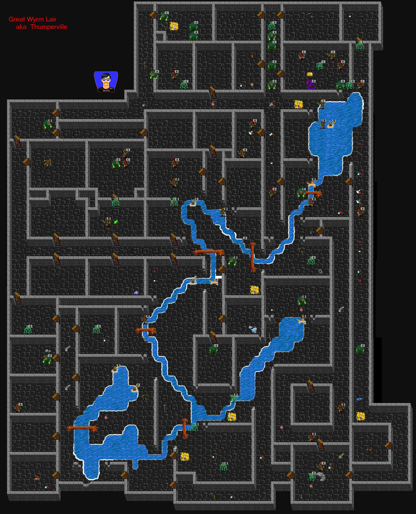

 |
| Thumperville |
| Back to Aleria. |
| My favorite dungeon. Good coin/skill/Xp here. The Great Wyrm (aka Barney) will stun, poison and strip you if you aren't careful. Farm the top section and you can make a Meg XP/coin per hour. Only stair and almost to the top left corner is twiggable. Barney sometimes drops Gold bars. |